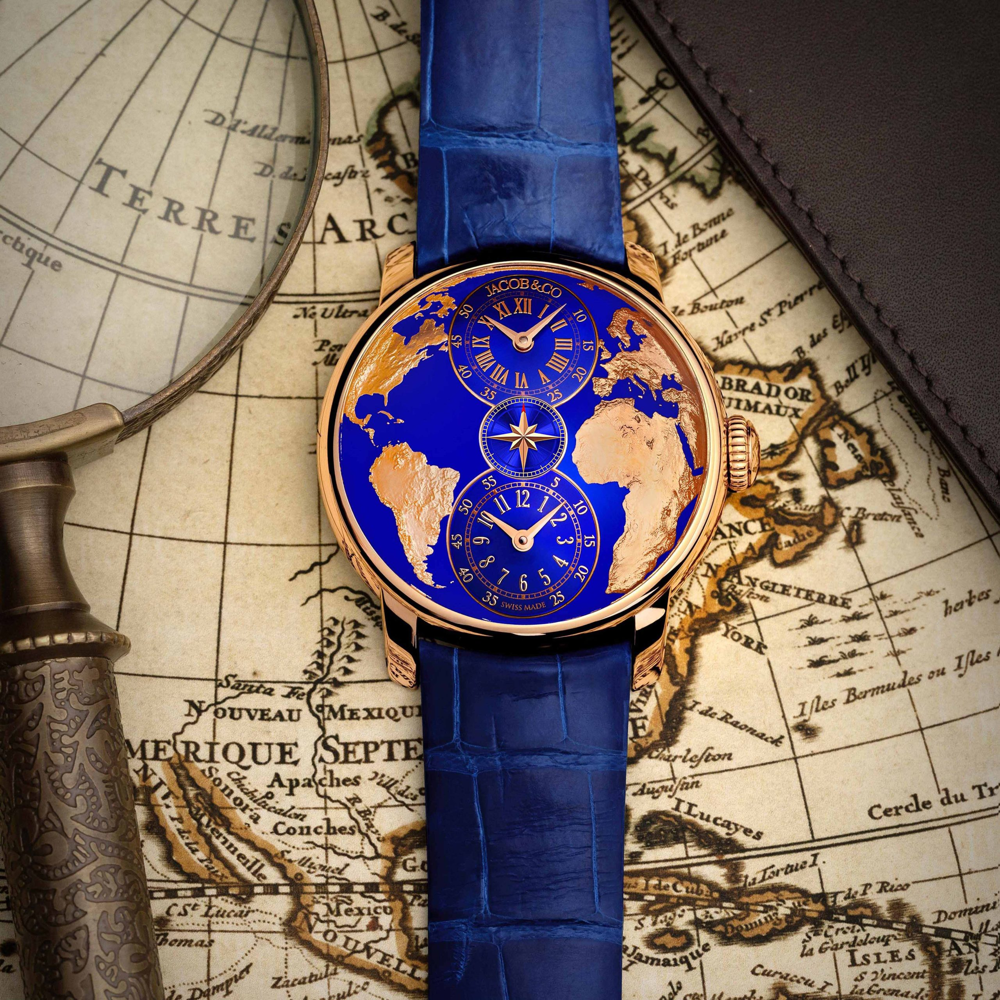

Wstęp
Dla wielu entuzjastów zegarków, nazwa Jacob & Co. jest synonimem innowacji i wyjątkowego designu. Założona przez Jacoba Arabo, znanego jako "Jacob the Jeweller", marka ta wyróżnia się swoimi spektakularnymi mechanizmami i silnym designem, takim jak kolekcja Astronomia czy zegarki Bugatti z prawdziwym silnikiem W16 w środku. Ale czy kiedykolwiek zastanawiałeś się, skąd wzięły się inspiracje do tych wyjątkowych projektów? W dzisiejszym wpisie przyjrzymy się historii jednego szczególnego zegarka, który zainspirował karierę Jacoba Arabo i stał się iskrą do stworzenia nowego dzieła sztuki - zegarka Jacob & Co. "The World Is Yours" Dual Time Zone Watch.

Historia Marki Jacob&Co
Historia marki Jacob & Co. jest równie fascynująca, co jej zegarki. Jacob Arabo, urodzony w Tashkencie, Uzbekistanie, wyruszył na swoją podróż zegarmistrzowską w młodym wieku, kiedy otrzymał od swojego ojca, Nisona Arabova, specjalny zegarek Wakmann. Ten zegarek nie tylko zainicjował jego zainteresowanie zegarmistrzostwem, ale także wpłynął na design jego przyszłych kreacji. Od tamtej pory zegarki z wieloma strefami czasowymi zawsze miały dla Jacoba & Co. szczególne znaczenie. Po przeprowadzce do Nowego Jorku w wieku 14 lat, Jacob zaczął pracować w fabryce biżuterii, projektując swoje własne kreacje i otwierając małą budkę w diamentowej dzielnicy miasta. Początkowo skupiał się na biżuterii, ale pamięć o jego własnym zegarku Wakmann Dual-Time pozostała i stała się źródłem inspiracji dla wielu przyszłych zegarków Jacoba... co obejmuje najnowsze dzieło Jacob & Co., zatytułowane "The World Is Yours" Dual Time Zone. Dziś Jacob & Co. to nie tylko o zegarki, ale także o opowieść, jak wszystko się zaczęło, jak się rozwijało i o historię rodziny. Jest to opowieść o jednym konkretnym zegarku, który zapalił iskrę, która później rozpaliła przyszłą karierę Jacoba. I to jest historia zawarta w nowym zegarku Jacob & Co. "The World Is Yours" Dual Time Zone Watch. Zapraszamy do dalszego czytania, aby dowiedzieć się więcej o tym fascynującym zegarku i historii, która stała się podstawą dla jednej z najbardziej innowacyjnych marek zegarków na świecie.
Historia Zegarka
Historia tego wyjątkowego zegarka zaczyna się w Taszkencie, w Uzbekistanie, skąd pochodzi rodzina Arabov. W wieku 13 lat, młody Jacob otrzymał od swojego ojca, Nisona Arabova, zegarek Wakmann z podwójnym wyświetlaczem czasu i złotą mapą świata na tarczy. Ten zegarek nie tylko zainicjował zainteresowanie Jacoba zegarkami, ale także wywarł duży wpływ na design jego przyszłych kreacji. Jak wyjaśnia Arabo, "Mój ojciec dał mi zegarek na prezent, gdy miałem 13 lat, który wyświetlał dwie strefy czasowe, i miał złocenie mapy świata na tarczy (...) Miało to dwa mechanizmy mechaniczne, i stąd wziął się pomysł na zegarek z pięcioma strefami czasowymi". Przenosimy się do Nowego Jorku, gdzie 14-letni Jacob i jego rodzina wyemigrowali w 1979 roku. Mimo że początkowo pracował w fabryce biżuterii i otworzył małą budkę w diamentowej dzielnicy Nowego Jorku, wspomnienia o jego własnym zegarku Dual-Time Wakmann pozostały i stały się źródłem inspiracji dla wielu przyszłych zegarków Jacoba. To były te wspomnienia, które inspirowały go do stworzenia najnowszego dzieła Jacob & Co., zatytułowanego "The World Is Yours" Dual Time Zone. Trzy pokolenia rodziny Arabov - Benjamin, Nison i Jacob - byli świadkami wielu zmian w historii i designie zegarków. Od emigracji do USA w 1979 roku, poprzez otwarcie pierwszego punktu sprzedaży biżuterii w Nowym Jorku, aż do momentu, gdy Jacob zdecydował, że chce zainwestować w zegarmistrzostwo, była to podróż pełna wyzwań i innowacji. Wpływ zegarka Wakmann Dual-Time na Jacoba był jednak niezaprzeczalny i stał się źródłem inspiracji dla wielu przyszłych zegarków marki, w tym najnowszej kolekcji "The World Is Yours". Nowy zegarek z tej kolekcji, pochodzenie tego nowego zegarka Dual Time Zone, który również wprowadza nową kolekcję "The World Is Yours", nie pozostawia wątpliwości. Jest to niewątpliwie Jacob & Co. w całości. Zakrzywione powierzchnie, użycie złota i niebieskiego jako kolorów charakterystycznych, oryginalne wyświetlanie i wiele stref czasowych to wszystko elementy charakterystyczne, które można znaleźć w innych zegarkach marki. Jednak jest coś niemal powściągliwego, przynajmniej według standardów Jacoba. Ten nowy zegarek, w porównaniu z ekstrawagancją Astronomii, wydaje się niemal klasyczny i, pomimo niewątpliwej odwagi, nie jest tak demonstracyjny jak niektóre wcześniejsze modele. "The World Is Yours" Dual Time Zone Watch: Ten nowy zegarek, będący hołdem dla rodzinnej pamiątki Arabov, wprowadza także nową kolekcję "The World Is Yours". Choć zachowuje charakterystyczne elementy innych zegarków marki, takie jak wygięte powierzchnie, użycie złota i niebieskiego jako kolorów charakterystycznych, oryginalny wyświetlacz i wiele stref czasowych, ma w sobie coś prawie powściągliwego, przynajmniej według standardów Jacoba.
Projekt
Projekt "The World Is Yours" Dual Time Zone Watch został zainspirowany zegarkiem Wakmann, który Jacob Arabo otrzymał od swojego ojca jako chłopiec. Ten zegarek posiadał złotą mapę świata na tarczy, co ostatecznie stało się inspiracją do stworzenia kolekcji "The World Is Yours". Na tarczy nowego zegarka widnieje mapa świata, z Zachodem i Wschodem po obu stronach tarczy, co jest ważnym elementem designu, ponieważ w czasach Związku Radzieckiego takie przedstawienia były rzadkością. Picturing the West było prywatnym i tajnym luksusem... Niebieska lakierowana podstawa jest domem dla lądów wyrzeźbionych za pomocą lasera wysokiej precyzji, a następnie pokrytych galwanicznym złotym pokryciem, z dwiema tarczami godzinowo-minutowymi wyświetlającymi niezależne strefy czasowe.
Mechanizm
Ten wyjątkowy zegarek jest napędzany całkowicie nowym, ekskluzywnym mechanizmem Jacob & Co. Wyświetla dwie strefy czasowe, z godzinami i minutami, w pionie po obu stronach licznika sekund. Każda strefa czasowa może być ustawiana niezależnie za pomocą koronki aż do minuty. Bazowy automatyczny mechanizm, który napędza własny moduł na górze dla stref czasowych, pochodzi od ETA. Pracuje z częstotliwością 4Hz i magazynuje 42h rezerwy mocy.
Limitowany
Zegarek "The World Is Yours" Dual Time Zone Watch jest noszony na niebieskim pasku z aligatora i wydany jako limitowana edycja 999 sztuk. Cena tego wyjątkowego zegarka to 57 000 USD.
Design
Obudowa z polerowanego różowego złota jest celowo elegancka, aby skupić uwagę na tarczy. Wszystko jest wygięte: obwódka jest stopniowana, zaokrąglona i bardzo cienka, aby oferować jak największą możliwą tarczę, a kryształ jest wypukły. Tył jest wykonany z litego złota z laserowo wygrawerowaną mapą świata. Na tarczy widzimy mapę świata, z Zachodem i Wschodem po obu stronach, co jest ważnym elementem designu, ponieważ w czasach Związku Radzieckiego takie przedstawienia były rzadkością. Picturing the West było prywatnym i tajnym luksusem. Niebieska, lakierowana podstawa jest domem dla mas lądowych, wyciętych wysoko precyzyjnym laserem, a następnie pokrytych różowo-złotym galwanicznym zabiegiem, z dwoma tarczami godzinowymi i minutowymi wyświetlającymi niezależne strefy czasowe. Cała tarcza jest silnie wypukła, z różnicą wysokości 3,7 mm między najniższym a najwyższym punktem. Środek, który wskazuje sekundy, ma kształt różanej wiatry. Proporcje, mimo że Jacob & Co. The World Is Yours Dual Time Zone nie można kategoryzować jako kompaktowy zegarek, są po stronie mniejszej dla marki, z średnicą 43 mm i wysokością 14 mm (Astronomia może łatwo mieć 50 mm x 25 mm).
Mechanizm:
Zegarek "The World Is Yours" Dual Time Zone jest napędzany przez całkowicie nowy, ekskluzywny mechanizm Jacob & Co. Jest to wyjątkowy ruch, który wskazuje dwie strefy czasowe, kompletnie z godzinami i minutami, pionowo wyrównanymi po obu stronach małego licznika sekund. Każda strefa czasowa może być ustawiana niezależnie, używając korony aż do minuty. Bazowy mechanizm automatyczny, który napędza specjalny moduł na górze dla stref czasowych, pochodzi od renomowanego producenta mechanizmów, ETA. Pracuje z częstotliwością 4 Hz, co zapewnia dokładność i niezawodność, i magazynuje 42 godziny rezerwy mocy, co gwarantuje, że zegarek będzie działał przez prawie dwa dni bez potrzeby nawijania.
Pasek
Zegarek ten wyposażony jest w niebieski pasek z aligatora i jest wydany jako limitowana edycja 999 egzemplarzy, co czyni go rzadkim i pożądanym elementem dla kolekcjonerów na całym świecie. Cena detaliczna zegarka Jacob & Co. "The World Is Yours" Dual Time Zone wynosi 57 000 dolarów amerykańskich.
Zakończenie
Zegarek Jacob & Co. "The World Is Yours" Dual Time Zone Watch to nie tylko wyjątkowy zegarek, ale także symbol hołdu dla rodzinnej pamiątki i inspiracji, które wpłynęły na karierę i życie Jacoba Arabo. Dostępny w limitowanej edycji zaledwie 999 sztuk, ten zegarek jest nie tylko rzadki, ale także niezwykle wartościowy, noszony na eleganckim niebieskim pasku z aligatora i wyceniony na 57 000 USD. Jest to inwestycja, która z pewnością zyska na wartości z biegiem czasu. Jednakże, wartość tego zegarka nie leży wyłącznie w jego rzadkości lub cenę. To, co naprawdę wyróżnia ten zegarek, to opowieść, którą opowiada. Historia migracji, rodziny, pasji i przede wszystkim inspiracji. Jest to zegarek, który świadczy o tym, jak ważne są nasze korzenie i jak mogą one kształtować naszą przyszłość. Dlatego, jeśli szukasz zegarka, który łączy w sobie nie tylko historię, innowacje i wyjątkowy design, ale także symbolizuje podróż, która prowadzi do osiągnięcia wielkości, model Jacob & Co. "The World Is Yours" Dual Time Zone Watch może być właśnie tym, czego szukasz. Jest to zegarek, który przekracza granice czasu i miejsca, przypominając nam, że świat naprawdę może być nasz, jeśli tylko mamy odwagę śnić wielko i dążyć do realizacji tych marzeń. Podsumowanie: Jacob & Co. "The World Is Yours" Dual Time Zone Watch to znacznie więcej niż tylko zegarek. To opowieść o inspiracji, determinacji, rodzinie i podróży przez czas, która prowadzi do stworzenia wyjątkowego dzieła sztuki. To połączenie innowacyjnego designu, precyzyjnego rzemiosła i głębokiego znaczenia. Zegarek ten stanowi hołd dla rodzinnej pamiątki Jacoba Arabo, co sprawia, że jest on niezwykle osobisty i wyjątkowy. Wartość tego zegarka nie polega wyłącznie na jego materiałach czy mechanizmach, ale przede wszystkim na historii, którą opowiada. Dla entuzjastów zegarków, którzy cenią sobie nie tylko wysoką jakość rzemiosła, ale także historię i znaczenie stojące za każdym detalem, ten zegarek jest idealnym wyborem. Jest to wyjątkowy model, który łączy w sobie elegancję, funkcjonalność i głębokie znaczenie. Jacob & Co. "The World Is Yours" Dual Time Zone Watch to zegarek, który łączy w sobie tradycję z nowoczesnością, przeszłość z przyszłością, i przypomina nam o tym, jak ważne jest, aby cenić swoje korzenie i dążyć do realizacji swoich marzeń. To zegarek dla tych, którzy nie boją się śnić i dążyć do osiągnięcia wielkości. To zegarek, który przekracza granice czasu i miejsca, przypominając nam, że świat naprawdę może być nasz, jeśli tylko mamy odwagę śnić wielko i dążyć do realizacji tych marzeń.